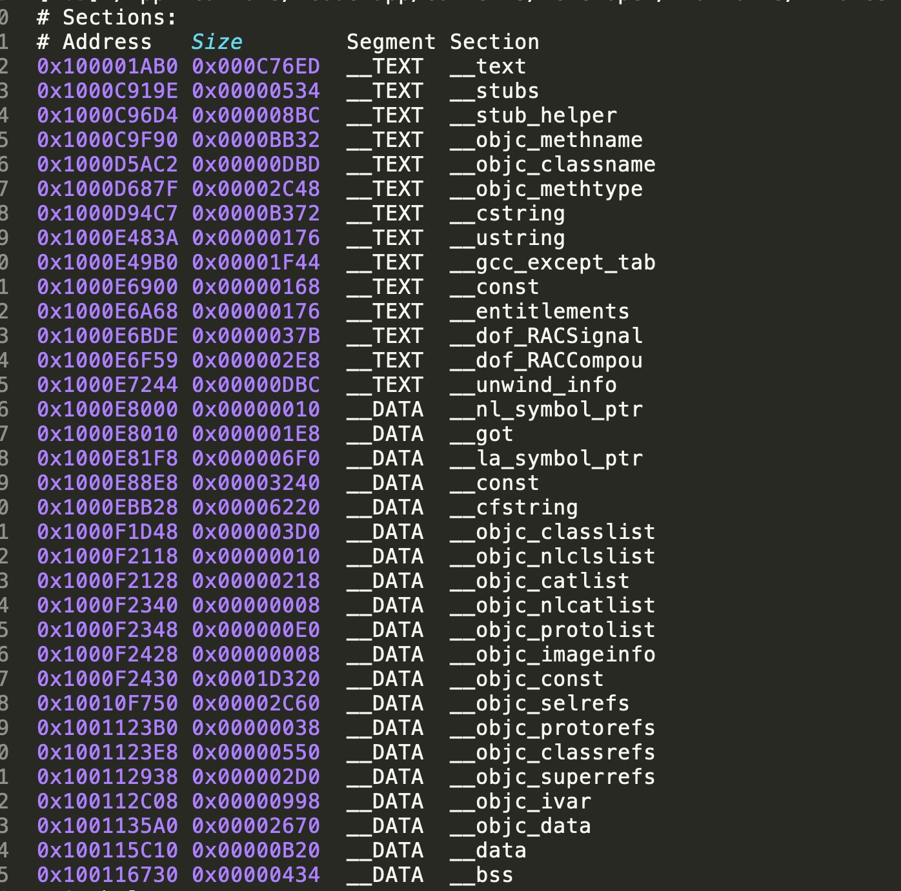
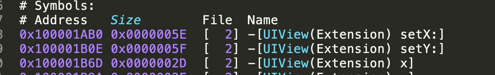

Link Map File && dSYM
学习自 深入剖析iOS编译
编译后生成的二进制内容 Link Map File
在build Setting里设置Write Link Map File为Yes后，每次编译都会在指定目录生成这样一个文件。文件内容包含了Object files，Sections，Symbols
Object files
这部分内容都是.m编译后的.o和需要link的.a文件。前面是文件编号，后面是文件路径
[ 2] /Users/fish/Library/Developer/Xcode/DerivedData/RSSReader-dguiqpuhzqvuwbewcrithsiyuewj/Build/Intermediates.noindex/RSSReader.build/Debug-iphonesimulator/RSSReader.build/Objects-normal/x86_64/UIView+Extension.o
...
...
...
[160] /Users/fish/Library/Developer/Xcode/DerivedData/RSSReader-dguiqpuhzqvuwbewcrithsiyuewj/Build/Products/Debug-iphonesimulator/libPods-RSSReader.a(Pods-RSSReader-dummy.o)
Sections
描述每个Section在可执行文件中的位置和大小。每个Section的Segment类型分为__TEXT代码段和__DATA数据段两种

.data数据段里面保存的都是初始化过的全局静态变量和局部静态变量。.rodata段存放的是只读数据，一般都是const修饰的变量和字符串常量。.bss段存放的是未初始化的全局变量和局部静态变量。代码段就在.text段。
Symbols
symbols对Sections进行了再划分。这里会描述所有的method、ivar和字符串，以及对应的地址、大小、文件编号信息等


每次编译后生成的dSYM文件
在每次编译后都会生成dSYM文件，程序在执行中通过地址来调用方法函数，而dSYM文件里存储了函数地址映射，这样调用栈里的地址可以通过dSYM这个映射表获取具体函数的位置。常用来处理crash时获取到的调用栈.crash文件，将其符号化
可以通过 Xcode 进行符号化，将 .crash 文件，.dSYM 和 .app 文件放到同一个目录下，打开 Xcode 的 Window 菜单下的 organizer，再点击 Device tab，最后选中左边的 Device Logs。选择 import 将 .crash 文件导入就可以看到 crash 的详细 log 了。
还可以通过命令行工具 symbolicatecrash 来手动符号化 crash log。同样先将 .crash 文件，.dSYM 和 .app 文件放到同一个目录下，然后输入下面的命令
export DEVELOPER_DIR=/Applications/Xcode.app/Contents/Developer
symbolicatecrash appName.crash appName.app > appName.log
debug环境默认不生成dsym文件，release环境才会生成
Swift编译流
Swift编译流和Clang一样都是编译前端，和 Clang 一样代码会被解析成语法数 AST，接下来会比 Clang 多一步，通过 SILGen 生成 SIL 这一次方便做些 Swift 特定的优化，SIL 会被传递给 IR 生成阶段生成 LLVM IR，最后由 LLVM 解决余下事情。
//生成程序
swiftc toy.swift
//生成检查 AST
swiftc -dump-ast toy.swift
//可以还原之前函数名
swiftc -emit-silgen toy.swift | xcrun swift-demangle
//llvm ir 和汇编的生成
swiftc -emit-ir toy.swift
swiftc -emit-assembly toy.swift
//生成可执行的脚本
xcrun -sdk macosx swiftc toy.swift -o toy
LLVM Backend
整个编译流程中 LLVM Backend的位置

LLVM Backend的流程图

CodeGen 阶段
- Instruction Selection 指令选择：将IR转化成目标平台指令组成的定向非循环图 DAG（Directed Acyclic Graph）
- Scheduling and Formation 调度与排序：读取 DAG，将 DAG 的指令排成 MachineInstr 的队列
- SSA 优化：多个基于 SSA（Static Single Assignment） 的 Pass 组成。比如 modulo-scheduling 和 peephole optimization 都是在这个阶段完成的
- Register allocation 寄存器分配：将 Virtual Register 映射到 Physical Register 或内存上 Prolog / Epilog 生成
- 确定所需堆栈大小：Machine Code
- 晚期优化：最后一次优化机会
- Code Emission：输出代码，可以选择汇编或者二进制机器码。
SelectionDAG
- 构建最初的 DAG：把 IR 里的 add 指令转成 SelectionDAG 的 add 节点
- 优化构建好的 DAG：把一些平台支持的 meta instructions 比如 Rotates，div / rem 指令识别出
- Legalization SelectionDAG 类型：比如某些平台只有64位浮点和32位整数运算指令，那么就需要把所有 f32 都提升到 f64，i1/i8/i16 都提升到 i32，同时还要把 i64 拆分成两个 i32 来存储，操作符的合法化，比如 SDIV 在 x86 上回转成 SDIVREM。这个过程结果可以通过 llc -view-dag-combine2-dags sum.ll 看到
- 指令选择 instruction selector（ISel）：将平台无关的 DAG 通过 TableGen 读入 .tb 文件并且生成对应的模式匹配代码从而转成平台相关的 DAG
- SelectionDAG Scheduling and Formation：因为 CPU 是没法执行 DAG，所以需要将指令从 DAG 中提取依据一定规则比如 minimal register pressure 或隐藏指令延迟重排成指令队列。（DAG -> linear list（SSA form） -> MachineInstr -> MC Layer API MCInst MCStreamr -> MCCodeEmitter -> Binary Instr）
Register Allocation 寄存器分配
寄存器在 LLVM 中的表达
物理寄存器在 LLVM 里均有 1 - 1023 范围内的编号。
虚拟寄存器到物理寄存器的映射
直接映射使用 TargetRegisterInfo 和 MachineOperand 中的 API。间接映射的API用 VirtRegMap 以正确插入读写指令实现内存调度
LLVM 自带的寄存器分配算法
llc -regalloc=Greedy add.bc -o ln.s
- Fast - debug 默认，尽可能保存寄存器。
- Basic - 增量分配
- Greedy - LLVM 默认寄存器分配算法，对 Basic 算法变量生存期进行分裂进行高度优化
- PBQP - 将寄存器分配描述成分区布尔二次规划
Code Emission

Clang库&&插件
使用 libclang 来进行语法分析
使用libclang里面提供的方法对源文件进行语法分析，分析语法树，遍历语法树上每个节点。
LibTooling 对语法树完全的控制
因为LibTooling能够完全控制语法树，那么就可以做很多事情了
- 可以改变clang生成代码的方式
- 增加更强的类型检查
- 按照自己的定义进行代码的检查分析
- 对源码做任意类型分析，甚至重写程序
- 给clang添加一些自定义的分析，创建自己的重构器
- 基于现有代码做出大量的修改
- 基于工程生成相关图形或文档
- 检查命名是否规范，还能够进行语言的转换，比如把OC转为JS或者Swift
官方有个文档开发者可以按照这个里面的说明去构造 LLVM，clang 和其工具： Tutorial for building tools using LibTooling and LibASTMatchers — Clang 4.0 documentation
Clang Plugin
通过自己写个插件，比如上面写的LibTooling的clang工具，可以将这个插件动态的加载到编译器中，对编译进行控制，可以再LLVM的目录看到一些范例llvm/tools/clang/tools
动态化方案DynamicCocoa中就是使用了一个将OC源码转JS的插件来进行代码的转换，这里整理了些利用clang转js的库 clangtojs资源 - Lmsgsendnilself ，JSPatch 是直接手写 JS 而没有转换的过程，所以也就没有多出这一步，而鹅厂的OCS更猛，直接在端内写了个编译器。在 C 函数的调用上孙源有个slides可以看看：Calling Conventions in Cocoa by sunnyxx bang 也有篇文章：如何动态调用 C 函数 « bang’s blog
滴滴的王康在做瘦身时也实现了一个自定义的 clang 插件，具体自定义插件的实现可以查看他的这文章 《基于clang插件的一种iOS包大小瘦身方案》
Clang Attributes
attribute(xx)是clang提供的能让开发者在编译过程中参与一些源码控制的方法
attribute((format(NSString,F,A)))格式化字符串
因为此时已经是C语言级别 String不需要加
@
比如NSLog的用法
FOUNDATION_EXPORT void NSLog(NSString *format, ...) NS_FORMAT_FUNCTION(1,2) NS_NO_TAIL_CALL;
#if !defined(NS_FORMAT_FUNCTION)
#if (__GNUC__*10+__GNUC_MINOR__ >= 42) && (TARGET_OS_MAC || TARGET_OS_EMBEDDED)
#define NS_FORMAT_FUNCTION(F,A) __attribute__((format(__NSString__, F, A)))
#else
#define NS_FORMAT_FUNCTION(F,A)
#endif
#endif
attribute((deprecated(s)))版本弃用提示
在编译过程中提示开发者该方法已经被弃用
@property (nonatomic, strong) NSString *testProperty __attribute__((deprecated("该属性已经不能用了")));
- (void)testDeprecatedMethod __attribute__((deprecated("该方法已经被弃用")));
- (void)deprecatedMethod DEPRECATED_ATTRIBUTE; //也可以直接使用DEPRECATED_ATTRIBUTE这个系统定义的宏
attribute((availability(os,introduced=m,deprecated=n, obsoleted=o,message=“” VA_ARGS))) 指明使用版本范围
- (void)method __attribute__((availability(ios,introduced=3_0,deprecated=6_0,obsoleted=7_0,message=“iOS3到iOS7版本可用，iOS7不能用”)));
attribute((unavailable(s))) 方法不可用提示
- (void)testUnvailableMethod __attribute__((unavailable("该方法已经不能使用")));
attribute((unused))
没有被使用也不报警告
NSString *str __attribute__((unused));
NSInteger reuslt __attribute__((unused)) = [vc testResultUnused];
attribute((warn_unused_result))
不使用该方法的返回值就会被警告
- (NSInteger)testResultUnused __attribute__((warn_unused_result));
attribute((availability(swift, unavailable, message=_msg)))
OC的方法 不能在swift中使用
attribute((cleanup(…))) 作用域结束时自动执行一个指定方法
作用于结束包括大括号结束，return，goto，break，exception等情况。这个动作是先于这个对象的dealloc调用的
//修饰一个变量 在他的作用域结束时 自动执行该方法
}
NSString *testCleanUp __attribute__((cleanup(testLastMethod) unused)) = @"testCleanUp";
}
int testLastMethod(__strong NSString **str) {
return 10;
}
attribute((overloadable)) 方法重载
能够在 c 的函数上实现方法重载。即同样的函数名函数能够对不同参数在编译时能够自动根据参数来选择定义的函数
__attribute__((overloadable)) void printArgument(int number){
NSLog(@“Add Int %i”, number);
}
__attribute__((overloadable)) void printArgument(NSString *number){
NSLog(@“Add NSString %@“, number);
}
__attribute__((overloadable)) void printArgument(NSNumber *number){
NSLog(@“Add NSNumber %@“, number);
}
attribute((objc_designated_initializer)) 指定内部实现的初始化方法
也可以使用OC中定义的宏 NS_DESIGNATED_INITIALIZER
即指定该类的指定构造器函数，使用规则
- 该类的指定构造器函数必须调用父类的指定构造器函数
- 该类的遍历构造器函数必须最终执行该类的指定构造器函数
attribute((objc_subclassing_restricted)) 指定不能有子类
指定该类不能有子类，类似java中的final函数
__attribute__((objc_subclassing_restricted))
@interface ViewController : UIViewController
@end
attribute((objc_requires_super)) 子类继承必须调用 super
//子类重写该方法如果不调用super 会有警告⚠️
- (void)testInheritanceMethod __attribute__((objc_requires_super));
attribute((const)) 重复调用相同数值参数优化返回
用于数值类型参数的函数，多次调用相同的数值型参数，返回是相同的，只在第一次需要进行运算，后面只返回第一次的结果，这是编译器的一种优化处理
attribute((constructor(PRIORITY))) 和 attribute((destructor(PRIORITY)))
PRIORITY 是指执行的优先级，main 函数执行之前会执行 constructor，main 函数执行后会执行 destructor，+load 会比 constructor 执行的更早点，因为动态链接器加载 Mach-O 文件时会先加载每个类，需要 +load 调用，然后才会调用所有的 constructor 方法。
通过这个特性，可以做些比较好玩的事情，比如说类已经 load 完了，是不是可以在 constructor 中对想替换的类进行替换，而不用加在特定类的 +load 方法里。
Clang警告处理
#pragma clang diagnostic push
#pragma clang diagnostic ignored “-Wdeprecated-declarations”
sizeLabel = [self sizeWithFont:font constrainedToSize:size lineBreakMode:NSLineBreakByWordWrapping];
#pragma clang diagnostic pop
attribute((constructor)) 在main函数之前调用
attribute((destructor)) 在main函数执行之后 或者exit()后被自动执行
文件级:在源代码文件中诊断(忽略/警告)
语法:
#pragma clang diagnostic [error|warning|ignored] "-W<警告选项>"
诊断-忽略:(关闭警告)
#pragma clang diagnostic ignored "-Wunused"
#pragma clang diagnostic ignored "-Wunused-parameter"
诊断-警告:(开启警告)
#pragma clang diagnostic warning "-Wunused"
#pragma clang diagnostic warning "-Wunused-parameter"
诊断-错误:(开启警告-升级为错误)
#pragma clang diagnostic error "-Wunused"
#pragma clang diagnostic error "-Wunused-parameter"
用法:
在文件开头处关闭警告,在文件结尾出再开启警告,这样可以忽略该文件中的指定警告.
对于项目中的警告我们可以右键警告revela in log 查看编译时的警告
就可以根据具体警告类型进行忽略

补充: 项目级别忽略警告
在项目的Build Settings中也可以设置忽略某种或者多种类型的警告,忽略整个项目的警告类型

也可以指定debug 或者 release
选项格式: -W[no-]<警告选项>
如 : -Wno-unused-parameter # no- 表示诊断时忽略这个警告
通过 CocoaPods 给项目导入了一些第三方库，这些库里面或多或少会有些警告，想消除这些警告，很简单，只需在 Podfile 中加上这一句 inhibit_all_warnings!，所有通过 CocoaPods 安装的第三库的警告就没有了。
Clang CFE
常用的Clang前端组件和库
- LLVM Support Library:
LLVM libSupport库提供了许多底层库和数据结果，包括命令行option处理，各种容器和系统抽象层，用于文件系统访问 - The Clang "Basic" Library: 提供了追踪和操纵
source buffers，source buffers的位置，diagnostics，token，抽象目标以及编译语言自己信息的low-level实用程序。还部分由可以用在其他非C语言比如SourceLocation、SourceManager,Diagnositics，FileManager等。其中Diagnositics这个子系统是编译器和普通写代码人交流的主要组成部分，它会诊断当前代码那些不正确，按照严重程度产生warning或error，每个诊断会有唯一ID,sourceLocation会负责管理 - The Driver Library : 和Driver相关的库
- Precompiled Header： Clang支持预编译Header的两个实现
- The Frontend Library： 这个库包含在Clang库之上构建的功能，比如输出diagnosistics的几种方法
- The Lexer and Preprocessor Library: 词法分析和预处理的库，包含了Token、Annotation、Tokens、TokenLexer、Lexer等词法类，还有Parser library和AST语法树相关的比如Type、ASTContext、QualType、DeclarationName、DeclContext以及CFG类
- The Sema Library： 解析器调用此库时，会对输入进行语义分析。对有效的程序，Sema为解析构造一个AST
- The CodeGen Lirary： 用AST作为输入，生成LLVM IR代码
libClang
Driver
Driver是Clang面向用户的接口，用来解析Option设置，判断决定调用的工具链，最终完成整个编译过程
Driver 的流程是按照 ArgList - Actions - Jobs 来的

CodeGen IR LLVM
CodeGen生成IR代码
将语法树翻译成LLVM IR中间代码，作为LLVM Backend输入的桥接语言。方便LLVM Backend可以做到与语言无关的优化
这个过程还会与runtime进行桥接
- 各种类、方法、成员变量等的结构体的生成，将其放到对应的Mach-O的Section中
- Non-Fragile ABI合成OBJC_IVAR_$_偏移值常量
- ObjCMessageExpr(AST树结构)翻译生成相应版本的objc_msgSend、super翻译生成objc_msgSendSuper
- strong、weak、copy、atomic、nonatomic、readwrite等合成@property自动实现setter和getter
- @synthesize 的处理
- 生成block_layout数据结构(即block对应的结构体)
- block和weak处理
- _block_invoke
- ARC的处理，即插入objc_storeStrong和objc_storeWeak等ARC代码;ObjCAutoreleasePoolStmt 转 objc_autorealeasePoolPush / Pop;自动添加 [super dealloc];给每个 ivar 的类合成 .cxx_destructor 方法自动释放类的成员变量
不管编译的语言时 Objective-C 还是 Swift 也不管对应机器是什么，亦或是即时编译，LLVM 里唯一不变的是中间语言 LLVM IR
LLVM IR
LLVM IR有三种表示格式，第一种是bitcode这样的存储格式，以.bc做后缀；第二种是可读的.ll；第三种是用于开发是操作LLVM IR的内存格式
一个编译单元即一个文件在IR里就是一个Module，Module里有Global variable和Function，在Function里有Basic Block，Basic Block里有指令Instructions
这样的话，如果想要开发一门新的语言只需要完成语法解析后，通过LLVM提供的丰富接口在内存中生成IR就可以直接运行在各个不同的平台
LLVM IR的优化
选择不同的O2、O3这样的优化回调用对应的Pass进行处理，比如死代码清理、内联化、表达式重组、循环变量移动等这样的Pass，可以通过命令llvm -opt调用LLVM优化相关的库
SSA
LLVM IR是SSA形式的，维护双向def-use信息，user-def是通过普通指针实现信息维护，def-user通过内存跳表和链表来实现，便于forward dataflow analysis和backward dataflow analysis。
llc 编译器是专门编译 LLVM IR 的编译器用来生成汇编文件。